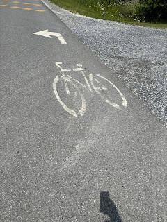

|  |
Notez que la route verte est indiquée par des petites pancartes sur les bords de rue tout comme les panneaux de signalisation.
Évidemment, l'idéal c'est d'utiliser la carte interactive de la route verte: https://www.routeverte.com/cartographie-route-verte/ Par contre, elle doit être rechargée à chaque fois que vous changez de place. J'ai déjà suggéré à l'équipe de la route verte une appli sur iphone/android mais sans succès...
Mise à jour IMPORTANTE: Je viens de découvrir une application nommée "CYCLEMAPS" https://cyclema.ps/hello (elle semble existée depuis longtemps..) qui est simplement géniale!! Vous avez toutes les pistes cyclables importantes partout dans le monde!! JE CAPOTE!! |
© 2024 Pedal Planet Expeditions